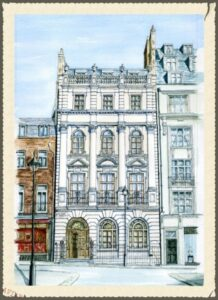

King Edward VII CoI

10 Duke Street,
St. James's, London
Under the authority of the Supreme Council 33° of the Ancient and Accepted Rite for England and Wales and its Districts and Chapters Overseas, King Edward VII Rose Croix Chapter of Improvement meets at 10 Duke Street, St. James's, London, SW1Y 6BS, on the first Thursday of every month throughout the year with the exception of August, at 5.30pm for a prompt start at 5.45pm.
The preferred dress code is formal casual. Regalia is not required, but visitors should be duly vouched for. The Enthronement Ceremony is rehearsed in lieu of the Third Point at the January, July, and October meetings.
All Princes, particularly those who are about to take office or who are currently in office, are encouraged to attend the regular meetings of the Chapter of Improvement. The Chapter of Improvement provides excellent opportunities for Princes to reach a good standard of ritual and floor work. Under the Ritings, at the end of each regular meeting, the Princes are separated in volunteer for an office for the next regular meeting or subsequent meetings. If requested, the Second Point can be split for two Princes to share the office.